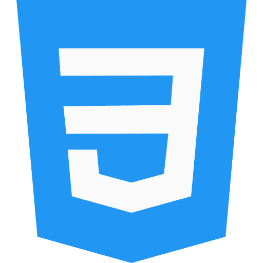

Desenvolvimento Front-End
Shilluê, de Viçosa do Ceará — construindo experiências digitais com propósito e foco em acessibilidade.
Conhecimento nas principais tecnologias do mercado
-

- 
Projetos
Clone Responsivo do Discord
Página inicial do Discord recriada com HTML e CSS puros, seguindo layout Figma da DIO.
- Tecnologias: HTML5, CSS3, Flexbox
- Design 100% responsivo com media queries
- Layout baseado no desafio da DIO (Figma)
- Práticas de semântica, organização e responsividade
Wikipedia Animes
Versão moderna da Wikipedia com foco em animes. HTML semântico, acessibilidade e multimídia.
- HTML5 com estrutura semântica completa
- Menu lateral, navegação interna, âncoras e rodapé
- Imagens, vídeos incorporados e conteúdo dividido em seções
- Práticas de semântica, organização e responsividade
Clone YouTube com HTML e CSS
Projeto inspirado na interface do YouTube para praticar Flexbox, layout e semântica
- Tecnologias: HTML5, CSS3, Flexbox
- Interface fiel à página inicial do YouTube
- Layout 100% CSS, sem JavaScript
- Embeds, botões, navegação e sugestão de vídeos
Sobre mim
Olá! Sou Shilluê, desenvolvedora web em formação com foco em Front-End. Tenho paixão por criar interfaces modernas, acessíveis e funcionais, aliando criatividade e atenção aos detalhes. Estou aberta a oportunidades que me desafiem e me permitam crescer profissionalmente na área.
Possuo uma base sólida em HTML, CSS e JavaScript, e me destaco por habilidades interpessoais como comunicação clara, organização, proatividade e resiliência. Acredito na colaboração e no aprendizado contínuo como pilares do desenvolvimento profissional e pessoal.
Formação Acadêmica
Análise e Desenvolvimento de Sistemas
Pós-graduação em Engenharia de Software
Pós-graduação em Algoritmos e Estruturas de Dados
Experiência
Desenvolvedora Front-End em formação contínua
2019 – AtualmenteApesar de ainda não ter atuado profissionalmente na área, sou formada em Análise e Desenvolvimento de Sistemas (2019) e possuo duas pós-graduações: uma em Engenharia de Software e outra em Algoritmos e Estruturas de Dados (2023). Desde então, venho aprofundando meus conhecimentos por meio de formações práticas, bootcamps e desenvolvimento de projetos próprios.
- Concluí a formação "Iniciante em Programação T6 – ONE / Alura" em 2024, com mais de 340 atividades práticas envolvendo HTML, CSS, JavaScript, Git e responsividade.
- Participante ativa do "Bootcamp Santander 2025 - Front-End" na DIO, com foco em acessibilidade, UI/UX e desenvolvimento web moderno.
- Criação de projetos como clones do Discord, YouTube e Wikipedia, aplicando HTML semântico, Flexbox, boas práticas de código e design responsivo.
- Aprendizado complementar sobre Inteligência Artificial aplicada ao Front-End.
- Formação complementar em Banco de Dados: concluí uma trilha de 5 cursos práticos em MySQL, totalizando mais de 320 atividades. Aprofundei conhecimentos desde comandos básicos e DML até modelagem de dados, otimização, segurança, stored procedures e administração de banco de dados, com foco em manipulação e consultas SQL avançadas.
Cursos
Digital Innovation One. Dez. 2023. 2h.
O que é versionamento de código, Git e GitHub. Como instalar e configurar o Git em diferentes sistemas operacionais e como autenticar via Token e SSH. Como manusear repositórios, indo desde a criação e clonagem até o gerenciamento de branches, passando por todas as etapas de salvar, desfazer e sincronizar alterações com o repositório remoto.
Digital Innovation One. Jul. 2025. 2h.
Neste curso, aprofundei meus conhecimentos em HTML5 semântico, explorando elementos como
<main>, <header>, <footer>,
<section>, <article>, <aside>,
<nav>, <blockquote>, <q>,
<figure>, <figcaption> e <picture>. Aprendi
como esses elementos melhoram a estrutura e a acessibilidade das páginas, além de compreender o
impacto do HTML5 nas mudanças semânticas da web, as boas práticas para SEO e sua importância no
contexto de web scraping.
Digital Innovation One. Jul. 2025. 2h.
Neste curso, aprendi a utilizar o Flexbox para criar layouts flexíveis e responsivos com CSS.
Estudei os conceitos fundamentais do modelo de layout flexível, os eixos principal e transversal, e
como manipular a direção dos elementos com a propriedade flex-direction. Trabalhei
também com flex-wrap para controlar a quebra de linhas e colunas, e com
justify-content, align-items e align-content para alinhar
elementos de forma precisa dentro do container. Aprofundei-me nas propriedades gap
(espaçamento), order (ordenação), flex-grow, flex-shrink e
flex-basis, além de aprender o uso do shorthand flex e
align-self para ajustes individuais. Esse conhecimento me permitiu desenvolver
estruturas mais modernas, limpas e adaptáveis para diferentes tamanhos de tela.
Digital Innovation One. Jul 2025. 3h.
No curso "Fundamentos do CSS", estudei desde os conceitos básicos do CSS até práticas essenciais
para estilização de páginas web. Aprendi o que é o CSS, suas formas de declaração e como ele pode
ser utilizado para criar layouts visuais personalizados. Explorei o uso de seletores (tags, IDs,
classes, universais e por atributos), combinadores (agrupamento, descendente, filho e irmão), além
de técnicas para depuração. Também me aprofundei nas propriedades de dimensionamento e espaçamento,
incluindo width, height, max-width, min-height,
margin, padding e box-sizing, essenciais para o controle
preciso da estrutura visual de um site.
Contate-me
Estou disponível para serviços e novas conexões. Contate-me via e-mail e conecte-se comigo através das minhas redes sociais.
shillue09@gmail.com